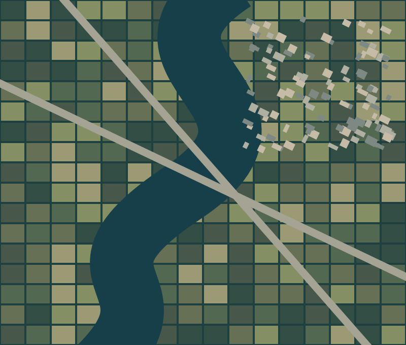
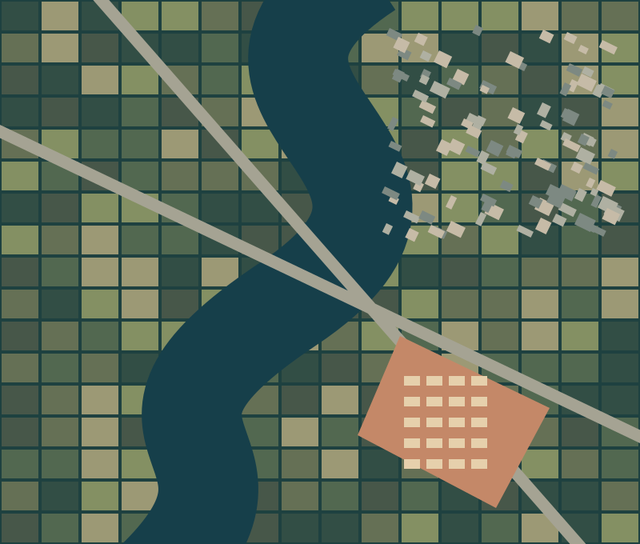

两个小练习，
一次网页实践。
遥感影像分析概念演示
以下场景由几何图形合成，用于展示概念和网页交互。没有运行识别模型，类别图并非预测结果。
01 / 地物类别可视化
选择影像或标签，查看同一场景的两种表达。

- 水体
- 植被
- 建筑
- 道路
这个练习说明什么？
语义分割（Semantic Segmentation）为每个像素分配一个类别。此处只演示标签的表达方式，不包含图像识别算法或精度评价。
02 / 两期影像对比
右下方人为增加了一组建筑。拖动滑块，对照同一位置的差异。

这个练习做了什么？
两幅同尺寸图像叠放，脚本将滑块数值写入 CSS 变量，通过裁剪控制上层影像的显示比例。滑块支持键盘方向键、Home 与 End。
03 / 个人主页设计
使用生成式 AI 辅助个人主页设计，先与 AI 交互，提出我想要的风格，确定好主题，由 AI 生成相关字体、版式和风格，再根据我的个人简历补充内容，改成深蓝、青绿与橙色的视觉风格。
首页地球图和三张项目封面是 AI 生成的概念插画，不是实测影像或项目截图。两项交互使用几何合成图，分别演示地物类别和影像对比，没有运行识别模型。
返回个人主页 ↗